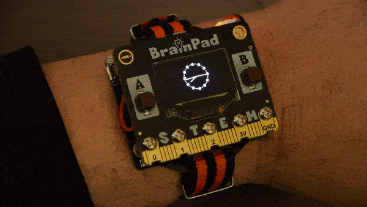

Pulse Analog Clock

This advanced sample turns your Brainpad Pulse into an analog clock
Hardware:
- Brainpad Pulse
- BrainPower (Optional)
This example demonstrates advanced features of the DUE-Script language.
- Using arrays to store X,Y coordinates
- Using variable as both arrays and numbers (very advanced feature to save variables)
# Pulse - LCD Clock
# Arrays to store the X and Y coordinates of each hand of the clock
# Index 0 - X
# Index 1 - Y
dim h[2]
dim m[2]
dim s[2]
# Numeric variables storing the current value for each of the hands
h=5
m=0
s=0
p=3.1415926
@loop
LCDClear(0)
face()
time()
LCDShow()
Wait(1000)
goto loop
# Draw the clock face
@face
# Draw the small dot on the clock face
for i=0 to 59
m[0]=25*cos(i*p/30):m[1]=25*sin(i*p/30)
LCDPixel(1,64+m[0],32+m[1])
next
# Draw the large dots for every hour
for i=0 to 11
m[0]=25*cos(i*p/6):m[1]=25*sin(i*p/6)
LCDCircle(1,64+m[0],32+m[1],2)
next
return
# Calculate and draw the new hand positions
@time
h[0]=16*cos(h*p/6):h[1]=16*sin(h*p/6)
m[0]=20*cos(m*p/30):m[1]=20*sin(m*p/30)
s[0]=25*cos(s*p/30):s[1]=25*sin(s*p/30)
if s=60:s=0:m=m+1:end
if m=60:m=0:h=h+1:end
if h=12:h=0:end
s=s+1
LCDLine(1,64,32,64+h[0],32+h[1])
LCDLine(1,64,32,64+m[0],32+m[1])
LCDLine(1,64,32,64+s[0],32+s[1])
return